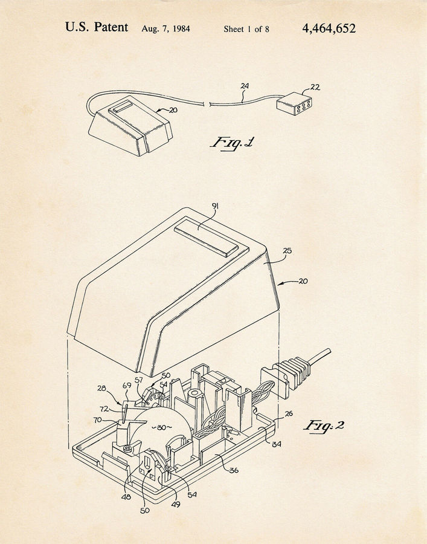
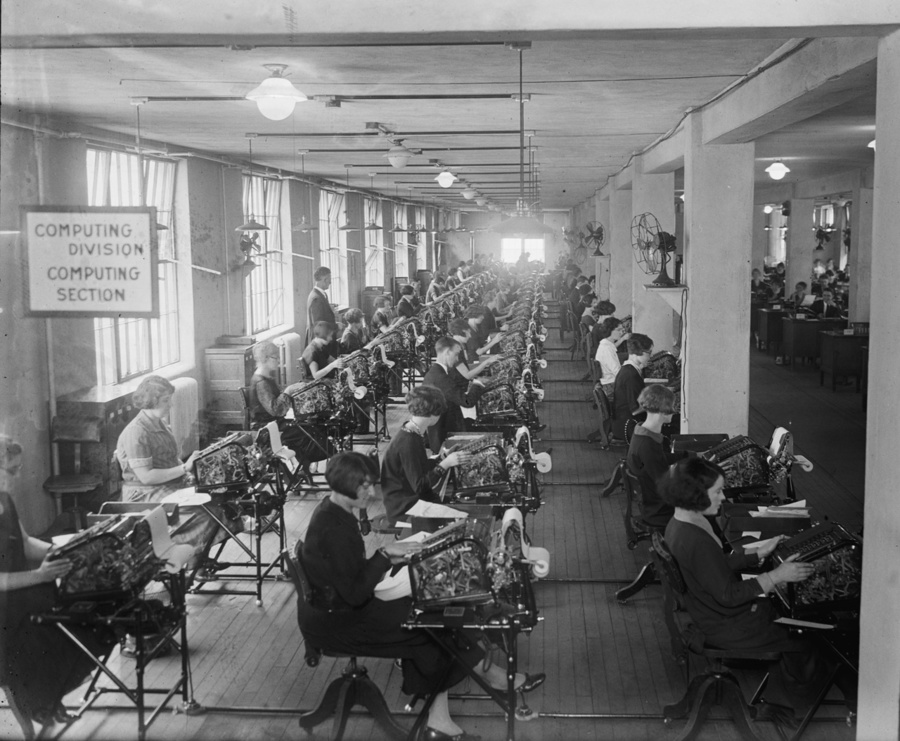
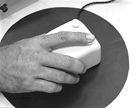
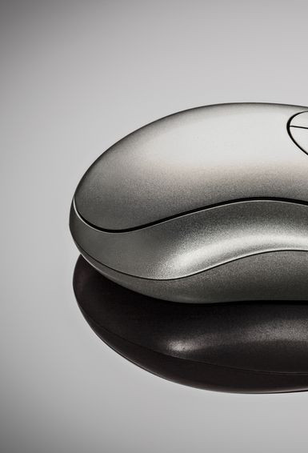
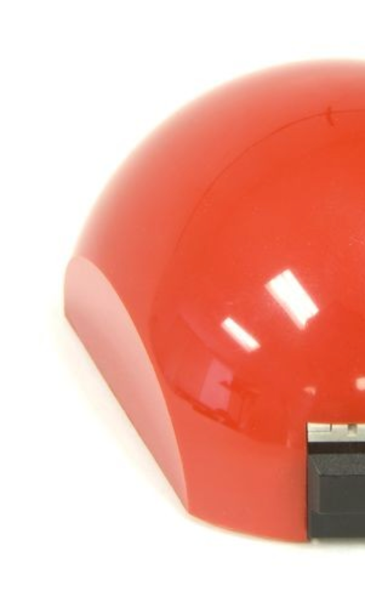
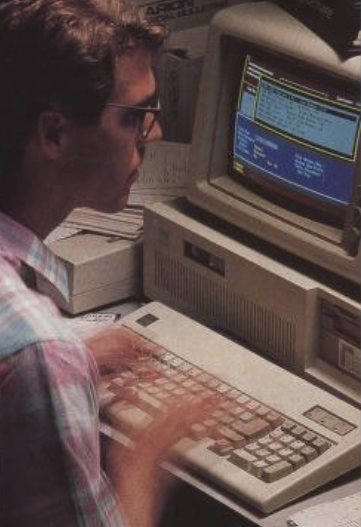
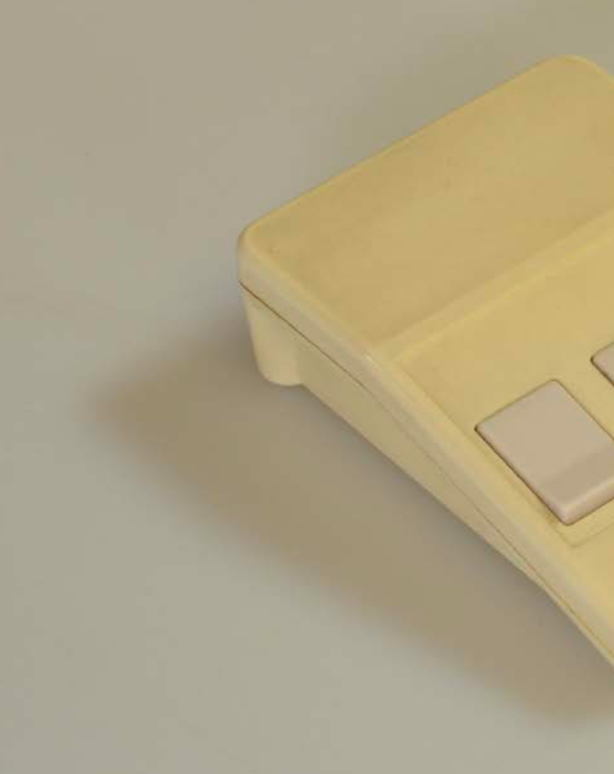

by emma rae nortona scrolling lecture on the computer mouse
1.The history of the mouse > a complex history of computing.scroll down on the right

3.Since the early days of computing there has been a shift from being “close to the metal”scroll right

5.From women as programmersscroll right
7.From men as mouse usersscroll right

17.The mouse was invented 10 years prior to the graphical user interface.scroll right


20.For the first time on a computer screen you could situate yourself within. You the cursor.scroll down
21.The computer mouse sits somewhere in between the metal of your computer and your body.scroll right
30.... on the body. scroll right

32.Open and close windows, scroll through images, guide your reading, click to buy, click to like.scroll right
34..scroll down

35.There is a line in a 1983 PC Magazine article that says, “Mice allowed programmers the luxury of working without taking their eyes off the screen” scroll right

38.To move your hand onto the mouse, and then, off of it, and then, again, onto it. scroll down

please scroll down on the right